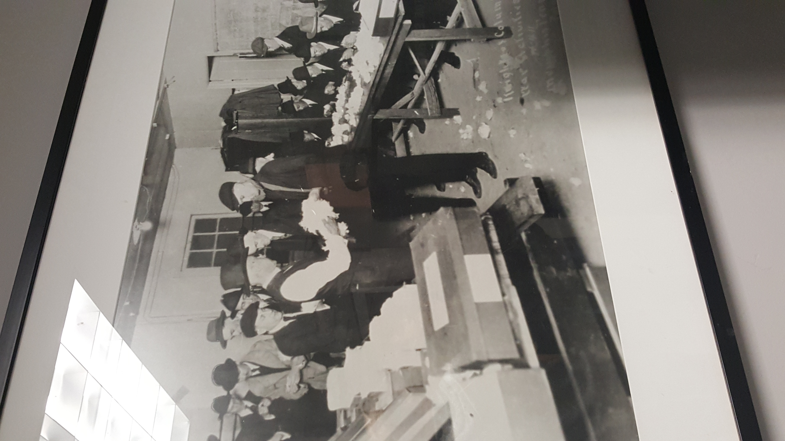
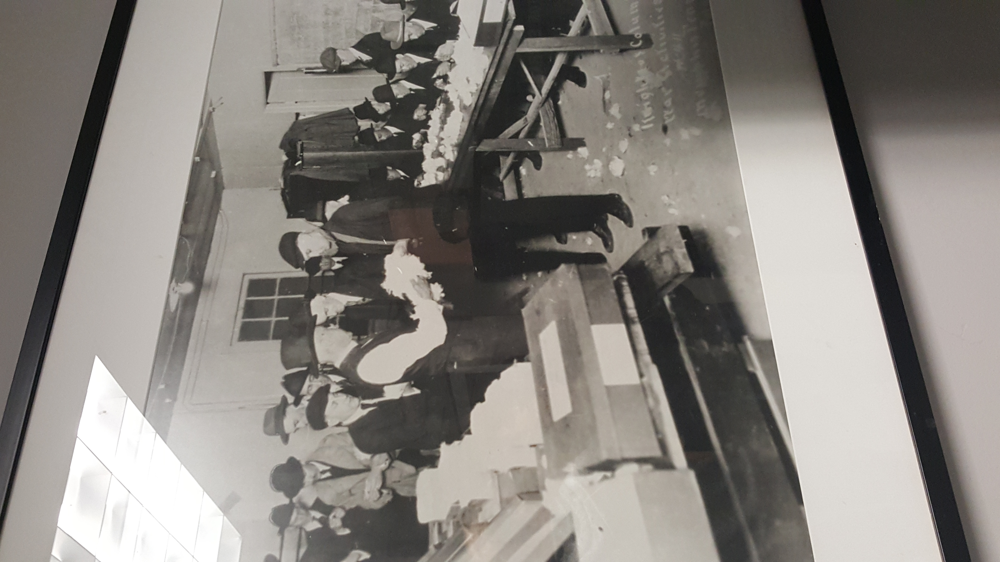

We started our adventure to the fine Archer Malmo establishment after second period last Friday. On the way there, the bus got a flat tire so we had to park in some weird place and walk down a block.
When we got to the building everyone was happy because it was freezing outside! We walked in and were greeted by an extravagant display of decoration with a hint of Christmas.
There was also an interactive display that showed the history of Archer Malmo, all the way back to its days in the cotton exchange.
 

After waiting in the lobby for a while, Ben came out, gave us a short explanation, and continued to guide up to the fourth floor. This floor was our first real look at a modern office.
As a result of movies and TV, we always envision offices as being these drab, cubicle lined floors, but the offices at Archer Malmo were almost cozy. There were couches, a ping pong table, and even some workers' dogs.
After everybody was up the elevator we sat down and listened to some workers from each department give us an explanation of their job. This included the pros and cons of it, their daily routine, and what they think is important for someone like us trying to get involved in their field.
There were several people who gave us a speech but I only took a picture of cameron because I liked his shirt.
Finally, the people were done speaking, and we took a group photo (And you can barely see me)

Then we took a tour of the building (inclusing the photo/video studio.) It kinda annoyed me how the guy there basically said iPhones are the best phones for photography, (when they're not .-.) but whatever.
After that we said our goodbyes and left Archer Malmo. With a quick (long) stop at Cook-Out we were on our way back to the school.